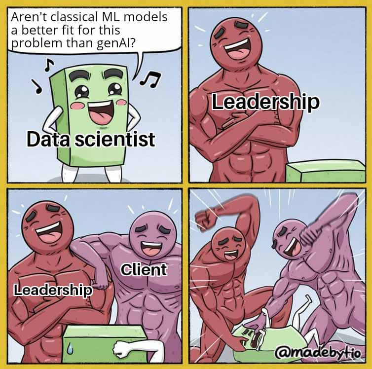

Tervetuloa kurssille
Danger
Tämä oppimateriaali on refaktoroinnin alla. Rakenne vaihdetaan vastaamaan Syväoppiminen I -kurssin rakennetta, jossa suuri osa tehtävistä on Marimo Notebookeja, jotka ovat samassa repositoryssa. Päivitys valmistuu syksyllä 2026.
Jos tarvitset vanhan version auki, käytä git tagia v2025. Hoituu näin:
git clone https://github.com/sourander/ml-perusteet && cd ml-perusteet
git checkout v2025
uv run mkdocs serve --open --livereload
Tämä varoitus poistuu, kun sivun rakenne on päivitetty lopulliseen muotoonsa.
Tervetuloa kurssille! Aiheita käydään läpi lyhyesti teoreettisesta näkökulmasta, mutta pääpaino on käytännön toteutuksissa. Klassiset koneoppimismallit eivät kenties ole yhtä jännittäviä kuin syväoppimismallit, mutta ne ovat tärkeitä ymmärtää, jotta ymmärrät syväoppimisen perusteet. Lisäksi ne ovat tuotannossa käypiä ratkaisuja yhä vieläkin. Alla on aihetta pohjustava sarjakuvapiirros.

Kuvio 1. Sarjakuvapiirros koneoppimisesta. (Copyright note: The memeified comic is by unknown author, but found from r/machinelearningmemes posted by u/joelllthedestoryer. Published with permission from the creator of the original comic strip MadeByTio.)
Git LFS
Ennen kuin kloonaat tätä repoa, sinun tulee aktivoida Git LFS (Large File Storage), jotta saat kurssin datatiedostot ladattua. Jos olet Windowsissa ja sinulla on Git for Windows, Git LFS on jo asennettu, mutta se tulee aktivoida. Jos olet macOS:ssä tai Ubuntussa, katso asennusohje How to Git > Käyttö > Gitlab: LFS tai etsi ohje valitsemastasi paikasta. Tämä tarvitsee tehdä vain kerran per tietokone.
# Ennen kuin kloonaat
git lfs install
# Ja nyt on turvallista...
mkdir -p ~/Code/sourander
cd ~/Code/sourander
git clone https://github.com/sourander/ml-perusteet
Tip
Tarvitset repositoriosta vain notebooks/-kansion, mutta GitHubin web-käyttöliittymä ei tue Git LFS:ää, joten sinun tulee kloonata koko repository. Kloonaamisen jälkeen voit kopioida notebooks/-kansion haluamaasi paikkaan ja tarpeen mukaan poistaa koko repositoryn.
Oppimistavoitteet
Viralliset oppimistavoitteet löydät OPS:sta, mutta pääpiirteittäin kurssin jälkeen:
- Osaat selittää koneoppimisen keskeiset käsitteet 5-vuotiaalle.
- Olet kouluttanut esimerkkien mukaiset mallit.
- ... joiden pohjalta olet luonut omia malleja.
- Olet luonut oppimispäiväkirjan, joka mahdollistaa kertauksen ja jatko-opiskelun.
- Olet valmis jatkamaan Syväoppiminen I -kurssin suuntaan.
Tehtävien numerointi
Kurssi sisältää tehtäviä, jotka tukevat syväoppimisen keskeisten käsitteiden ja menetelmien ymmärtämistä. Tehtävien tarkoitus ei ole tuottaa yksittäisiä “oikeita vastauksia”, vaan toimia lähtökohtana oppimiselle, kokeilulle ja reflektoinnille.
Kurssin lopullinen palautus on oppimispäiväkirja, joka on yhtenäinen, raporttimainen dokumentti. Oppimispäiväkirja ei ole tehtäväkohtainen loki, vaan kokonaisuus, jossa:
- yhdistät kurssimateriaalin, kirjallisuuden ja tehtävien kautta syntyneet havainnot
- perustat esityksesi omaan ymmärrykseesi, kokeiluihisi ja pohdintaasi
- käytät tehtäviä esimerkkeinä, kokeiluina ja havaintojen lähteenä
Tehtäviin ei odoteta kysymys–vastaus-tyyppisiä ratkaisuja oppimispäiväkirjassa. Sen sijaan odotetaan selittävää, perustelevaa ja kokonaisuuksia yhdistelevää tekstiä, hieman opinnäytetyön tapaan, mutta kurssin laajuuteen sopivassa mittakaavassa.
Tehtävät löytyvät kunkin osion lopusta. Lisäksi kaikki tehtävät ovat koostettuna Tehtäväkooste-sivulle. Tehtävät palautetaan Oppimispäiväkirja 101 -ohjeistuksen mukaisesti eli Gitlab Pages:ssa hostattuna staattisena sivustona.
Useat tehtävät viittaavat Marimo-työkalulla tehtyihin notebookeihin. Kyseessä on Jupyter Notebook -työkalun seuraaja. Notebookit löydät kurssin repositoriosta polusta gh:sourander/syvaoppiminen/notebooks.
Numerointi
Kurssiaiheet ovat numeroitu sataluvuilla. Otetaan esimerkiksi kuvitteelliset luvut 1 ja 2:
Aiheeseen Eläinkunta liittyvät aineistot tunnistat sataluvulla 1xx, ja aiheeseen Ohjelmointikielet liittyvät aineistot tunnistat satakymmenluvulla 2xx. Esimerkiksi
notebooks/nb/100/100_marsu.py101_leijona.py102_kissa.py110_varis.py(seuraava kymppi eli linnut)111_kotka.py
notebooks/nb/200/200_python_alkeet.py210_rust_alkeet.py(seuraava kymppi eli Rust)
Sama pätee esimerkiksi kurssin videoihin. Jos videon otsikossa on luku välillä 100-199, tiedät, että se liittyy aiheeseen Eläinkunta. Jos taas videon otsikossa on luku välillä 200-299, tiedät, että se liittyy aiheeseen Ohjelmointikielet. Kymmenluvusta tunnistat tarkemman aiheen.
Koodin ajaminen
TODO!
Kurssikirjallisuus
Kurssin virallinen kirja on Aurélien Géronin Hands-On Machine Learning with Scikit-Learn and Pytorch : Concepts, Tools, and Techniques to Build Intelligent Systems ja se löytyy KAMK Finna-kirjastosta. Kirjaudu HAKA-tunnuksilla sisään, klikkaa Hae kokoteksti ja lue EBSCOhostin kautta in-browser -lukijasovelluksella. Kirjan Part 1: The Fundamentals of Machine Learning on tämän kurssin sisältöä. Tätä sisältöä on noin 200–300 sivua, riippuen lasketaanko PCA ja ohjaamaton oppiminen mukaan.
Info
Jos käyt kurssin suppeampaa 3 opintopisteen toteutusta, luet vähemmän: tarkista Reppu oppimisympäristöstä, mitkä aihealueet kuuluvat 3 opintopisteen toteutukseen. Tällöin sinulla on merkittävästi vähemmän luettavaa.
Voit viitata kirjaan seuraavalla tavalla:
[^geronpytorch]: Géron, A. Hands-On Machine Learning with Scikit-Learn and PyTorch. O'Reilly. 2025.
Faktavirheet
Mikäli oppimateriaali sisältää virheellistä tietoa, tee jompi kumpi:
- Forkkaa GitHubin repository ja tarjoa Pull Request, joka sisältää korjausehdotukset.
- Ota yhteyttä ylläpitoon ja esittele virheellisen tiedon korjaus.